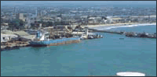

COTONOU-科托努简介
COTONOU-科托努简介

港口性质：湖口海湾港，设有自由贸
经纬度：06度21分N，002 度26分E
航 线：西非
位于贝宁（全称：贝宁共和国THE REPUBLIC OF BENIN）南部沿海的诺奎（NAKOUE）湖口，濒临贝宁湾的北侧，是贝宁的最大海港。始建于1964年，为首都波多诺伏（PORT0一NOVO）的外港，相距约35km，现为全国经济及对外贸易的中心，是贝宁的海上门户。主要工业有机械、电力、水泥、榨油、食品、纺织及日用化工等。铁路北通帕拉库（PARAKOU），公路可直达尼日尔（NIGER）。该港还是尼日尔、马里及布基纳法索的进出口物资转运港。港口距国际机场约5km，有定期航班飞往欧洲等地。
该港属热带雨林气候，盛行西南风。年平均气温约22～34℃。全年平均降雨量约1300mm。大潮高1.5m。港区主要码头泊位有5个，岸线长1280m，最大水深11m。装卸设备有拖船及直径为150～200mm的输油管及滚装设施等，其中拖船的功率最大为1470kW。港区的库场面积8万平方米，另有集装箱堆场6.5万平方米。有铁路直接延伸至码头装卸。码头最大可靠4万载重吨的船舶。本港保税区仓储西积约6万平方米。1992年集装箱吞吐量为2.8万TEU。主要出口货物为花生、棉花、棕油及棕仁等，进口货物主要有纺织品、机器设备、食品及燃油等，在节假日中如果需要加班，须提前申请安排。